Lesson 5: Muscle Models¶
Caution
Old tutorial: This tutorial has not yet been updated to ver. 7 of the AnyBody Modeling System. Some concepts may have changed.
Muscle model is a description of how a muscle behaves under different operating conditions. There are two schools of thought within this area.
- The first school pursues phenomenological models based on the classical work by A.V. Hill [Hill_1938]. These models are usually based on a description of a muscle as a contractile element in combination with a number of elastic elements. While these models make no attempt to directly model the microscopic mechanisms of muscle contraction, they do reproduce many properties of muscle behavior quite well, and most models of this class can be implemented with great numerical efficiency.
- The second school attempts to directly model the microscopic physical phenomena of cross bridge activity in muscle contraction. The origin of these models is usually attributed to A.F. Huxley [Huxley_1957], and they lead to differential equations and consequently to much more computationally demanding models.
The AnyBody Modeling System requires muscle models because it must take the strength of different muscles into account when distributing the load over them. A traditional muscle model is one that takes an activation signal and a present muscle state as input and produces a force as output. But inverse dynamics, as it is used in the AnyBody Modeling System, does not work quite like that. Instead of taking an activation signal as input, AnyBody produces the muscle active state as output. This means that typical muscle models from the literature must be mathematically inverted before they can be used in the AnyBody Modeling System. Depending on the complexity of the muscle model, this may be more or less difficult.
AnyBody has four muscle model classes available differing in complexity and accuracy of their representation of physiological muscles. All of these are phenomenological, i.e. they make no attempt to capture the complexity of cross bridge dynamics. You may ask why we would want three different models? Why don’t we just use the better of the three models? The answer is that accurate models are good, but they are never more accurate than the input data, and it is often difficult to find the detailed physiological data that the complex models require. Instead of basing a computation on data of unknown accuracy it is often preferable to go with a simpler model where the approximations are clear. Furthermore, more complex models need access to reliable source of data for their parameters, and they also need fairly costly calibration steps to improve accuracy.
Here are the muscle models available in AnyBody. The simple (AnyMuscleModel) and the three-element (AnyMuscleModel3E) muscle models are the most commonly used ones in the AMMR, whereas the two-element (AnyMuscleModel2ELin) and the custom user-defined (AnyMuscleModelUsr1) models provide users with even more freedom to test, learn and benchmark muscle-tendon units.
| Class Name | Description |
|---|---|
| AnyMuscleModel | This is the simplest conceivable muscle model, and it is the one we have used in the preceding lessons of this tutorial. The only required input to the model is the muscle’s presumed isometric strength, F0, i.e. the force that the muscle can exert in a static condition at its optimal length. F0 is often believed to be proportional to the physiological cross sectional area of the muscle, and it is possible to find that dimension for most significant muscles in the human body from cadaver studies reported in the scientific literature. It is important to stress that the strength of this muscle model is independent of the muscle’s current length and contraction velocity. It is known for a fact that muscles do not behave that way, but for models with moderate contraction velocities and small joint angle variations even this simple model will work reasonably well. Such has been shown to be the case for bicycling and gait. |
| AnyMuscleModel3E | This is a full-blown Hill model that takes parallel passive elasticity of the muscle, serial elasticity of the tendon, pennation angle of the fibers, and many other properties into account. However, it also requires several physiological parameters that may be difficult to get or estimate for a particular muscle in a particular individual. The concepts for this model are adopted from [Zajac_1989]. |
| AnyMuscleModel2ELin | This model presumes that the muscle strength is proportional to its current length and contraction velocity. This means that the muscle gets weaker when its length decreases or the contraction velocity increases. In other words, the muscle strength is bilinear in the length and velocity space. The model also presumes that the tendon is linearly elastic and as such contains two elements: A contractile element (the muscle), and a serial-elastic element (the tendon). The rationale behind this model is that a muscle has a certain passive elasticity built into it. If the muscle it stretched far enough, the passive elasticity will build up force and reduce the necessity for active muscle force. This is in some cases equivalent to an increase of the muscle’s strength. Notice, however, that this model has the significant drawback that the force can be switched off even if the muscle is stretched very far, while the true passive elasticity will always provide a force when it is stretched. |
| AnyMuscleModelUsr1 | This is a custom user-defined muscle model. The users are free to define the strength of the muscle as any explicit expression of muscle variables (e.g. length and velocity), kinematic measures and time. |
In the remainder of this lesson we shall experiment with the consequences
of the different muscle models. The AnyScript model from the previous
lesson will suffice very nicely. You can download a functional version
of the model here: MuscleDemo.5.any.
AnyMuscleModel2ELin¶
Right-click and save the file to your local disk, and subsequently open the model in the AnyBody Modeling System. We have already seen the consequences of using the simple muscle model, so we shall proceed directly to the two-element muscle, the AnyMuscleModel2ELin. Let us define such a muscle model. If you click the Classes tab in the tree view left of the edit window, expand the class tree, right-click the AnyMuscleModel2ELin class, and insert a template, you will obtain the following:
AnyMuscleModel SimpleModel = {
F0 = 100;
//Lf0 = 0;
//Vol0 = 0;
};
AnyMuscleModel2ELin <ObjectName> = {
F0 = 0.0;
//Lf0 = 0.0;
//Vol0 = 0.0;
//Lfbar = 0.0;
Lt0 = 0.0;
//Epsilon0 = 0.05;
//Epsilonbar = 0.05;
V0 = 0.0;
};
Let us briefly review the parameters:
| Parameter | Function |
|---|---|
| F0 | In the simple muscle model, F0 is simply the strength of the muscle. In this two-parameter model, F0 is the ideal strength, i.e. the strength of the muscle at neutral fiber length and zero contraction velocity. F0 is measured in force units, i.e. Newton. |
| Lf0 | The neutral fiber length, i.e. the length of the contractile element at which the muscle has the strength of F0. Lf0 is measured in length units, i.e. meters. |
| Vol0 | Ensemble volume of the muscle fibers, which can be used during muscle recruitment. Volume must be positive; zero or negative values are ignored. |
| Lfbar | This is the deprecated parameter for Lf0. |
| Lt0 | The muscle’s total length from origin to insertion can be divided into two parts: the length of the muscle’s contractile element plus the length of the tendon. The tendon is considered in this model to be linearly elastic, and Lt0 is the slack length of the tendon, i.e. the length when it is taut but carrying no force. Lt0 is measured in length units, i.e. meters. |
| Epsilon0 | This parameter controls the elasticity of the tendon. The physical interpretation is that it is the tendon’s strain when subjected to a force of F0. Prescribing a strain rather than an ordinary spring stiffness is based on the idea that the tendon thickness must be related to the strength of the muscle: strong muscles need strong tendons. Hence, Epsilon0 can be presumed with good accuracy to be the same for a wide variety of very different muscles. Epsilon0 is measured in fractions and is therefore dimensionless. |
| Epsilonbar | This is the deprecated parameter for Epsilon0. |
| V0 | This model presumes that the muscle’s strength depends linearly on its contraction velocity. V0 is measured in absolute velocity, i.e. m/s. |
We can study the significance of the parameters in more detail, if we formulate the strength mathematically:
\(Strength = F_0 \left(2\frac{L_m}{{L}_{f0}}-1 \right) \left( 1-\frac{\dot{L}_m}{V_0} \right)\)
You can probably recognize the variable names in the table above from the symbols in the equation. As you can see, this is really a bilinear model, where the variables are Lm and Lmdot. The strength of the muscle vanishes if any of the two parentheses becomes zero. This can happen if either Lm, i.e. the current length of the contractile element, becomes half the length of Lf0, or if Lmdot becomes equal to V0. Please notice that Lmdot is negative when a muscle is contracting, so meaningful values of V0 must also be negative. The system automatically truncates negative values of the strength expression to zero.
In a few moments, when we start playing around with the muscle model in AnyBody, you wll recognize these properties in the available muscle variables in the Chart View.
Let us assign a name and some reasonable parameters to our two-element muscle model:
AnyMuscleModel2ELin Model2 = {
F0 = 200;
Lf0 = 0.3;
Lt0 = 0.5;
Epsilon0 = 0.05;
V0 = -8.0;
};
The parameters here are more or less random. In a moment we shall explain the ones that are less random, but first we must assign the new model to Muscle1:
AnyShortestPathMuscle Muscle1 = {
AnyMuscleModel &Model = .Model2;
AnyRefFrame &Orig = .GlobalRef.M1Origin;
AnyRefFrame &Via = .Arm.ViaPoint;
AnySurface &srf = .GlobalRef.CylCenter.WrapSurf;
AnyRefFrame &Ins = .Arm.M1Insertion;
SPLine.StringMesh = 20;
AnyDrawMuscle drw = {
Bulging = 0;
ColorScale = 1;
MaxStress = 250000;
};
};
We are ready to run the analysis again and investigate the results. Pick the InverseDynamics analysis in the tree of operations and click the Run button. Then open a new Chart View and expand the tree in the Chart View as far down as Muscle1. You will see a whole list of muscle properties that you can chart simply by clicking them. Let us initially see how the properties Lm and Lmdot affecting the strength of the model. You can plot several properties simultaneously in the Chart View by use of an asterix in the variable specification field at the top of the window like this:

Now we can compare the variation of Lm and Lmdot to our settings of Lf0 and V0. Lm seems to vary between approximately 0.31 and 0.15. With an Lf0 of 0.3 (= 2x0.15) this means that the muscle must come close to the minimum length at which it has low strength when we approach the end of the movement. Lmdot varies between -0.24 and -0.06, and this is far from its speed limit V0 = -8, so the contraction speed is not expected to have much effect. We can investigate the effect very easily simply by clicking the Strength property of the muscle and obtain the following graph:
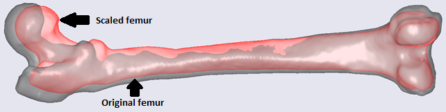
The strength does indeed decrease drastically from around 200 N to almost nothing as we expected when the muscle contracts.
Now that we have muscle data available, let us briefly review the parameters presented in the Chart View:
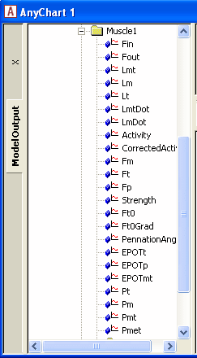
| Variable | Description |
|---|---|
Fin |
is a force, but it has no physiological significance for a muscle except for internal purposes. The reason why it is included in the output is that it is inherited from the AnyScript classes that a muscle is derived from. |
Fout |
The generalized force of the muscle-tendon unit. |
Lmt |
The total length of the muscle-tendon unit, i.e. the origin-insertion length. |
Lm |
The length of the muscle’s contractile element. |
Lt |
The length of the tendon. This is not necessarily the same as Lt0 because the tendon is elastic and therefore stretches slightly with the force. |
LmtDot |
The rate of change of Lmt, i.e. the length change velocity of the total muscle-tendon unit. |
LmDot |
The contraction velocity of the contractile element. |
Activity |
The muscle active state in fractions of maxmum voluntary contraction. |
CorrectedActivity |
For this muscle model this is the same as Activity. |
Fm |
The force in the muscle’s contractile element. For this muscle type it is equal to the total force in the muscle-tendon unit because the muscle does not have any parallel components. |
Ft |
The force in the tendon. For this muscle model it is the same as Fm. |
Fp |
is not relevant for this type of muscle model. |
Strength |
The muscle’s strength at each moment of the movement. |
Ft0 |
is not relevant for this type of muscle model. |
Ft0Grad |
The derivative of tendon force with respect to active state. For this muscle model it amounts to exactly the same as the Strength variable, but for muscles with parallel elasticity the two properties will be different. |
PennationAngle |
This is not relevant for this muscle model type. |
EPOTt |
The potential elastic energy in the tendon. |
EPOTp |
The potential elastic energy in the parallel-elastic element, which is not included in this muscle model. |
EPOTmt |
The total elastic potential energy in the muscle-tendon unit. |
Pt |
This is not relevant for this muscle model. |
Pm |
The mechanical power exerted by the muscle’s contractile element. |
Pmt |
The mechanical power of the muscle-tendon unit on the skeleton. |
Pmet |
This is a crude estimate of the metabolic power consumption of the muscle taking different efficiencies for concentric and eccentric work into account. |
We have seen how the length of the muscle affects its strength, but what about the velocity? Well, the specified values of -8 m/s is a reasonable estimate for many physiological muscles, but let us try to decrease it and thereby make the muscle more sensitive to contraction velocity:
AnyMuscleModel2ELin Model2 = {
F0 = 200;
Lf0 = 0.3;
Lt0 = 0.5;
Epsilon0 = 0.05;
V0 = -0.3;
};
A value of V0 = -0.3 is close to the contraction velocity of the muscle in the beginning of the simulation. This, this decreases the strength of the muscle significantly as we can see by reloading, rerunning and plotting the Strength variable again:
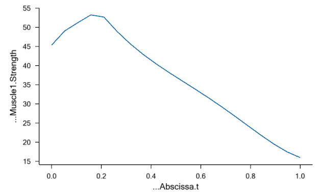
Instead of being monotonically decreasing, the muscle strength now improves slightly in the initial part of the simulation, but it is all through the simulation significantly weaker than before. The initial increase is due to the beneficial effect of the decreasing contraction velocity, so this muscle model in spite of its simplicity is capable of balancing several of the effects of real muscle physiology.
Another of the important input parameters in this example is the nominal tendon length, Lt0. This is a parameter that has a very large influence on the muscle’s performance. The total origin-insertion length of the muscle-tendon unit depends on the size and posture of the body. The muscle spans this length with the sum of muscle length, Lm, and tendon length, Lt, such that Lmt = Lm + Lt. Both Lm and Lt change during the movement of the body. Lt is given by its initial length, Lt0, and the elastic deformation. Lm has to take up whatever rest of Lmt that is available after Lt has been subtracted. In some cases, the tendon is significantly longer than the muscle, and this means that a relatively small variation of the tendon length results in a large relative variation of the portion of Lmt that the muscle has to fill. Obviously Lt0 plays a significant role for Lt and hence influences the working length of the muscle. Let us investigate this effect by reducing Lt0:
AnyMuscleModel2ELin Model2 = {
F0 = 200;
Lf0 = 0.3;
Lt0 = 0.3;
Epsilon0 = 0.05;
V0 = -0.3;
};
This reduction of the tendon length from 0.5 to 0.3 m is very significant compared to the nominal muscle fiber length of Lf0 = 0.3 m. Reducing the length of the tendon increases the length and thereby the strength of the muscle:
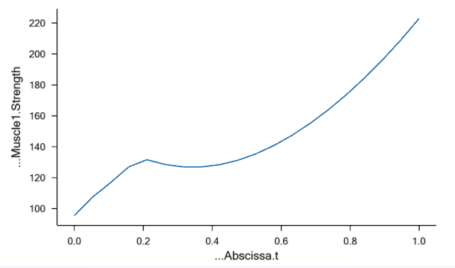
The interdependency between the stretch of the tendon, the length of the muscle, and the strength of the muscle is the origin of another approximation in the model: The system computes the changed length of the muscle due to the stretching of the tendon, but this length change is not taken into account in the computation of the muscle strength. Nevertheless, let us investigate how the stretch of the tendon influences the muscle. We shall define an external load on the arm, which causes the tendon to stretch. But before we change anything, let us just notice that the variation of muscle length, Lm, over the movement in the absence of an external load is as shown below:
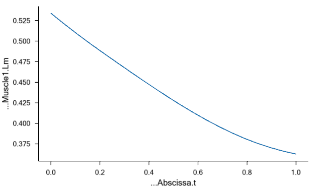
Definition of an external force requires two new elements in the model: The force itself and a new node on the arm, which we shall call hand, to which the load can be applied:
// Define one simple segment
AnySeg Arm = {
r = {0.500000, 0.000000, 0.000000};
Mass = 1.000000;
Jii = {0.100000, 1.000000, 1.000000}*0.1;
AnyRefNode Jnt = {
sRel = {-0.5, 0.0, 0};
};
AnyRefNode M1Insertion = {
sRel = {0.3, 0.05, 0};
};
AnyRefNode M2Insertion = {
sRel = {-0.2, 0.05, 0.05};
};
AnyRefNode ViaPoint = {
sRel = {0.0, 0.1, 0};
};
AnyRefNode Hand = {
sRel = {0.5, 0.0, 0};
};
AnyDrawSeg drw = {};
};
AnyForce3D Load = {
AnyRefNode &Attachment = .Arm.Hand;
F = {-100, -100, 0};
};
The load is pointing down and backward at a 45 degree angle, so that it changes its moment arm from positive to negative a shortly after the midpoint of the analysis. This causes the muscle length to vary in the following fashion:
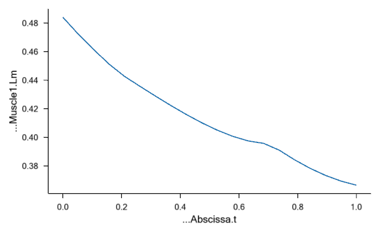
The interesting point here is that with the long tendon and the high load, the muscle no longer contracts uniformly. In fact, the muscle extends for much of the movement due to the decreasing load which causes the elastic tendon to contract instead.
While the two-parameter muscle model captures many of the properties of real muscles it also fails to reflect important parts of muscle physiology, so it should be applied with care. In particular it does not model passive elasticity. The following section presents a full-blown Hill-type model, which does not have these shortcomings.
AnyMuscleModel3E¶
So far we have been focusing our attention on Muscle1 in the demo model
and left Muscle2 with the simple muscle model. Let us briefly study what
Muscle2 is actually doing (if you need an updated working model, you can
download it here:
*MuscleDemo.5-2.any*. Muscle2 wraps
about the cylinder and obviously extends significantly as the arm turns
upward. If you run the analysis and plot the length of Muscle2, you will
see that it increases from 0.7 to 1 meter. For a normal muscle (actually a
muscle of this size would probably be found in a giraffe) a stretching
of that magnitude would almost certainly lead to some passive force in
the muscle.
Passive force is what comes from the structural integrity of the muscle. If we disregard the active properties of the muscle and think of it as simply a piece of material that we can stretch, then the material will provide a passive resistance depending on how far we stretch it. This is the passive component of the muscle force. We can easily find passive muscle force in our own bodies: When we bend forward and try to touch our toes with the straight legs, then most of us will feel the hamstrings getting very taut. This is passive elasticity. The two-element muscle model of the preceding section handles the presence of this elasticity by increasing the strength of the muscle, and this works fine if the muscle is supposed to be active in the sense that the model in such a state would predict a high force with a low muscle activity. But the passive muscle force cannot be switched off, so it will still be present even if it is disadvantageous, and the two-element model will not predict this.
The AnyMuscleModel3E is a full-blown Hill-type muscle model that does not suffer from this deficiency. It is called a three-element model because it has the following components:
- A contractile element (CE) representing the active properties of the muscle fibers.
- A serial-elastic (T) element representing the elasticity of the tendon.
- A parallel-elastic element (PE) representing the passive stiffness of the muscle fibers.
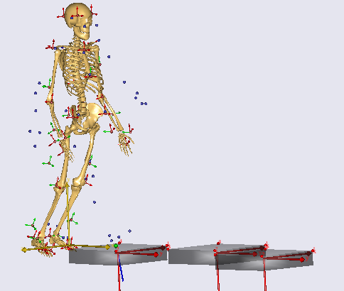
The figure above is a schematic representation of the muscle model. We can get a complete impression of the parameters of the model if we pick the model from the Class List as we have done before and insert a template into our AnyScript model:
AnyMuscleModel2ELin Model2 = {
F0 = 200;
Lf0 = 0.3;
Lt0 = 0.3;
Epsilon0 = 0.05;
V0 = -0.3;
};
AnyMuscleModel3E <ObjectName> = {
F0 = 0.0;
//Lf0 = 0.0;
//Vol0 = 0.0;
Lt0 = 0.0;
//Gamma0 = 0.0;
//Epsilon0 = 0.05;
Fcfast = 0.0;
//Jt = 3.0;
//Jpe = 3.0;
//K1 = 2.0;
//K2 = 8.0;
//PEFactor = 5.0;
//Lfbar = 0.0;
//Gammabar = 0.0;
//Epsilonbar = 0.05;
};
Several of these elements are described already in the two-element model above, but some are new and described in the table below. No excuse we can make is going to soften the fact that muscle modeling at this level of detail is a technical matter, and it is not possible to describe the physiological and mathematical background in detail. Instead please refer to the publications at the end of this lesson for further information:
Gamma0- Gamma is the so-called pennation angle. It reflects that fact that most muscles have the fibers misaligned with the directions of action of the muscle. Gamma changes when the muscle extends or contracts, and Gamma0 is the value of Gamma in the muscle’s neutral position. It is possible to find values for Gamma0 for most major muscles in the human body in the anatomical literature. Gamma0 is measured in radians.
Fcfast- Muscle fibers come in two flavors: fast twitch and slow twitch, and the composition of these vary between the muscles as well as between individuals. Fast fibers, as the name indicates, have the ability of fast action at the cost of stamina, and slow fibers have opposite properties. Sprint runners have a high proportion of fast twitch muscles while marathon runners have many slow twitch muscles. Fcfast is the fraction of fast twitch fibers in the muscle. It is a fraction between 0 and 1 and hence dimensionless.
JtandJpe- Jt and Jpe are elasticity factors for the tendon (serial-elastic) and parallel-elastic elements respectively. The background of these parameters is that the model presumes a nonlinear elasticity of these elements, and the precise shape of the force-deformation characteristics of the element are determined by Jt and Jpe respectively. In essence, Jt and Jpe are material constants and should not vary too much between different muscles or individuals. Recommended values are Jt = Jpe = 3.0. These two parameters are dimensionless.
K1andK2- These two factors are used only to ensure a reasonable relationship between fiber length, fiber composition, and Fcfast. As discussed in the preceding section, the strength of a muscle tapers off when its contraction velocity grows. Rather than working with a given maximum contraction speed as the two-element model does, K1 and K2 enable us to link the maximum contraction speed to the physiological properties of the muscle. The idea is that muscles with longer fibers and a larger fraction of fast twitch muscles should have a higher maximum contraction velocity. Preferred values for K1 and K2 differ significantly between authors in the scientific literature, but a good guess would be K1 = 2 and K2 = 8. K1 and K2 formally have the unit of fractions per time unit, i.e. s-1.
PEFactor- This factor is related to Jpe. Where Jpe controls the shape of the nonlinearity, PEFactor controls the steepness of the force in the parallel-elastic element as it is elongated. If we imagine a completely inactive muscle and load the muscle with a force corresponding to the active strength of the muscle, i.e. F0, then the length of the elongated muscle fibers will be PEFactor x Lf0. In other words PEFactor is a dimensionless measure of the flexibility of the parallel-elastic element of the muscle.
Gammabar- This is the deprecated parameter for Gamma0.
Knowing the significance of the different parameters, let us pick reasonable values for Muscle2 and study their influences:
AnyMuscleModel3E Model3 = {
F0 = 100;
Lf0 = 0.3;
Gamma0 = 30*pi/180;
Epsilon0 = 0.05;
Lt0 = 0.5;
Fcfast = 0.4;
Jt = 3.0;
Jpe = 3.0;
K1 = 2;
K2 = 8;
PEFactor = 5;
};
Notice that Lf0 + Lt0 = 0.8, which is in the range of the Lmt variation of Muscle2. This is important because it gives the muscle a reasonable chance of spanning the origin-insertion length.
We also have to associate Muscle2 with the new muscle model:
AnyShortestPathMuscle Muscle2 = {
AnyMuscleModel &Model = .Model3;
AnyRefFrame &Orig = .GlobalRef.M2Origin;
AnySurface &srf = .GlobalRef.CylCenter.WrapSurf;
AnyRefFrame &Ins = .Arm.M2Insertion;
SPLine.StringMesh = 20;
SPLine.InitWrapPosVectors = {{-0.2, -0.2, 0},{-0.05,-0.2, 0}};
AnyDrawMuscle drw = {
Bulging = 0;
ColorScale = 1;
MaxStress = 250000;
};
};
Finally, to have a more clean-cut case, we temporarily remove the external force that we previously added
/*
AnyForce3D Load = {
AnyRefNode &Attachment = .Arm.Hand;
F = {-100, -100, 0};
};
*/
We are ready to try running the InverseDynamics analysis again. Load the model, pick InverseDynamics analysis in the operations tree, and click the Run button. The arm should move as it did in the previous section. Now, using a Chart View we can investigate the behavior of the new muscle. In the Chart View’s tree, expand the folders as far as Muscle2, and try charting some of the parameters.
The key to understanding the muscle’s behavior is to study the forces in the muscle’s different elements. The chart of Fm, which is the force in the muscle’s contractile element, is very uninteresting. This muscle does not contribute to carrying the load, and hence the system does not activate it. But the muscle is not without force. The property Fp, which is the force in the parallel-elastic element of the muscle has the following behavior:

In the initial phase of the movement, the parallel-elastic element is slack and adds no force to the muscle. But as the muscle gets extended, the passive muscle force sets in, and it continues to rise as the movement progresses. Notice that this passive force acts against the movement and hence requires Muscle1 to work that much more. But the passive force has another interesting effect, which we can see if we chart the property Lt, i.e. the length of the tendon (Notice that we have changed the scale of the ordinate axis):
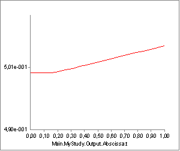
From the time the passive force sets in, the tendon starts to elongate a little bit.
The total origin-insertion length of the muscle-tendon unit is the tendon length plus the muscle length, i.e. Lm + Lt. When Lt is stretched, the effect is that the muscle fibers stretch that much less, and since the muscle’s strength depends on the momentary length of the contractile element, the strain in the tendon can influence the strength of the muscle. The figure above shows that the tendon stretch is rather limited and we might therefore expect that the influence on the muscle strength is also limited. However, some muscles in the human body (for instance m. soleus) have the property of relatively short fibers and a long tendon, and in this case the effect can be significant.
The three-element muscle model attempts to take this into account in the computation of muscle activity, coping with the fact that this is a catch-22 type of problem in inverse dynamics:
- We cannot compute the elongation of the tendon until we know the force in the muscle.
- We do not know the force in the muscle until we have solved the muscle recruitment problem.
- To solve the muscle recruitment we need the momentary strength of each muscle.
- The momentary strength depends on the elongation of the tendon.
We seem to be faced with a circular dependency between the muscle properties. The three-element model copes with this through a one-time correction: It recruits the muscle without taking the tendon elongation into account. Then it computes the tendon elongation. Finally, it computes the influence of the elongation on the muscle’s strength and corrects the muscle activity to the level that provides the necessary force with the modified strength. This is only an approximative solution because the change of muscle strength may theoretically alter the distribution of force between the muscles, and this alteration is not done by the system; the correction is local to each muscle.
So much for passive properties! It is more instructive to investigate a muscle model with active force. The easiest way to do so is to enable our hand force again and change it to point directly upward. This causes the previously inactive Muscle2 to become active:
// Define one simple segment
AnySeg Arm = {
r = {0.500000, 0.000000, 0.000000};
Mass = 1.000000;
Jii = {0.100000, 1.000000, 1.000000}*0.1;
AnyRefNode Jnt = {
sRel = {-0.5, 0.0, 0};
};
AnyRefNode M1Insertion = {
sRel = {0.3, 0.05, 0};
};
AnyRefNode M2Insertion = {
sRel = {-0.2, 0.05, 0.05};
};
AnyRefNode ViaPoint = {
sRel = {0.0, 0.1, 0};
};
AnyRefNode Hand = {
sRel = {0.5, 0.0, 0};
};
AnyDrawSeg drw = {};
};
AnyForce3D Load = {
AnyRefNode &Attachment = .Arm.Hand;
F = {0, 10, 0};
};
With this we can run the InverseDynamics analysis again and get the muscle to do some work. Let us systematically investigate the output:
| Variable | Description | Plot |
|---|---|---|
Fin |
is a force, but it has no physiological significance for a muscle except for internal purposes. The reason why it is included in the output is that it is inherited from the AnyScript classes that a muscle is derived from. | |
Fout |
This is the generalized force of the muscle-tendon unit. | |
Lmt |
The length of the muscle-tendon unit. If you plot this property you will see that it rises almost linearly as the muscle is extended. Closer investigation, however, will reveal that it is offset slightly by the nonlinearity caused by the elongation of the tendon due to the varying force. |  |
Lm |
The length of the contractile element. |  |
Lt |
The length of the tendon. This appears to be constant, but the tendon length actually changes slightly over the movement with the changes of muscle force as described above. | 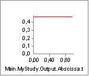 |
LmtDot |
The contraction velocity of the muscle-tendon unit. The value is positive because the muscle is getting longer. | 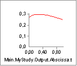 |
LmDot |
The contraction velocity of the contractile element of the muscle. The value is positive because the muscle is getting longer. | |
Activity |
This is the muscle activity before correction for the change in muscle length caused by the elastic elongation of the muscle. The complicated variation is caused by the interplay between change of moment arm of the applied force, the passive force in the muscle and the change of muscle strength with the contraction. | 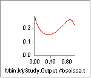 |
Corrected-Activity |
This is the muscle activity after correction for the tendon elongation. The difference between this graph and the one above is that the activity toward the end is higher after correction. This can be difficult to understand and illustrates the complexity of muscle modeling. The reason is the following: The force in the muscle decreases towards the end of the movement. When the force is reduced, the tendon contracts, and this means that the muscle must elongate even more. Since the muscle length is already in the interval where further elongation will cause decreased strength, the tendon contraction has the effect of increasing the muscle activity. | 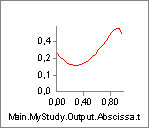 |
Fm |
The force in the contractile element is decreasing throughout the movement because the moment arm of the external force is decreasing and also because the passive force in the muscle is contributing more and more to balancing the load. | 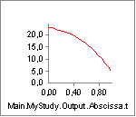 |
Ft |
The tendon force shows the reduction of the mucle action by virtue of the reduced external force’s moment arm alone. A simplified explanation is that Ft = Fm + Fp, but this is not entirely true because we also have to account for the pennation angle. | 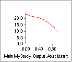 |
Fp |
The passive force in the muscle increases as the muscle is stretched. | 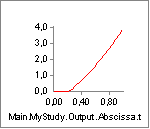 |
Strength |
This is the strength of the muscle. It is not corrected for the tendon elongation. | 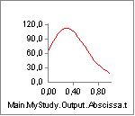 |
Ft0 |
The hypothetical force that the tendon would have if the activity of the muscle were zero. The reason why this is slightly different from Fp is that Ft0 acts directly along the action line of the muscle while Fp is diverted by the pennation angle. This property is mostly interesting to scientists involved in detailed modeling of single muscles. | 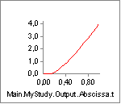 |
Ft0Grad |
The gradient of Ft0 with respect to the muscle activity. For mathematical reasons this is equal to the Strength, and the two graphs are identical. The reason why this property is included under to different names is that the simple muscle model, from which this model is derived, does not have Ft0Grad and hence needs a Strength property. | 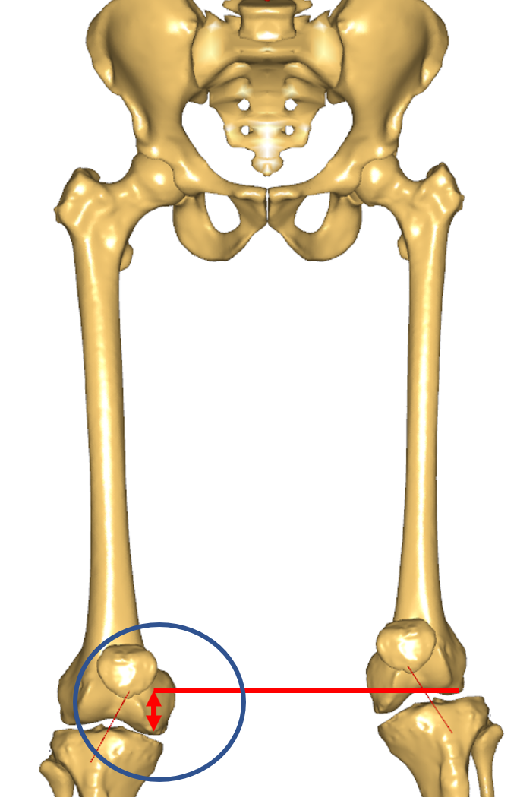 |
Pennation-Angle |
The pennation angle is the angle between the muscle fiber direction and the muscle line of action. This angle changes when the muscle contracts and elongates, and the model takes this effect into account. | 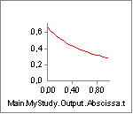 |
EPOTt |
The elastic potential energy stored in the tendon. | 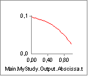 |
EPOTp |
The elastic potential energy stored in the parallel-elastic element of the muscle. | 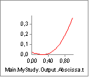 |
EPOTmt |
The elastic potential energy stored in the entire muscle-tendon unit. This can have some practical significance for investigation of movement economy and sports activities in general. | 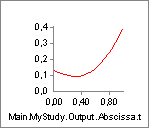 |
Pt |
The rate of change of elastic potential energy in the tendon. | |
Pm |
The mechanical power of the contractile element. | 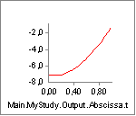 |
Pmt |
The mechanical power of the entire muscle-tendon unit, i.e. the rate of work performed on the skeleton. Notice that the power is negative because the muscle is extending against the force. Muscles behaving like this in the human body are often termed antagonistic muscles. | 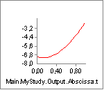 |
Pmet |
A crude estimate of the metabolism in the muscle. The estimate is based on presumed efficiencies of the contractile element of 25% for concentric work and -120% for eccentric work. The model does not take the metabolism of isometric force into account. | 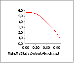 |
Calibration¶
Note: This section describes calibration of muscle-tendon units briefly; for more details and more examples, please refer to *Inverse Dyanmics of Muscle Systems: Calibration*.
One of the practical challenges in working with detailed muscle models in complex musculoskeletal systems is the dependency on defined tendon length, Lt0. A brief experiment with our model can reveal where the difficulty lies. In the model we have just investigated, the activity of Muscle2 has the following development over the movement:
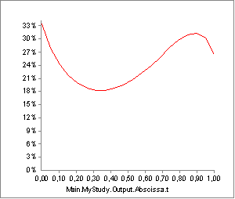
But what would happen if our guess of tendon length, Lt0, in the muscle model definition was just slightly off the correct value? Well if we change the current value from 0.5 m to 0.45 m, i.e. a reduction of 10%, we get the following activity:

Not only is the shape of the graph different, the maximum activity is also significantly higher. An error of 10% in anthropometric data value is not uncommon considering the accuracy of measurement methods and variation between individuals, and if the influence on the final result is as strong as this, we would not be able to trust our results. The problem is even more difficult if we desire to scale models up and down in size: Muscles pass along complex paths from origin to insertion, and the lengths of these paths do not scale in a simple fashion with, for instance, overall subject height.
As usual in biomechanical modeling, the solution can be found by relying on nature’s ability to make the best of its resources. Nature has not equipped humans with tendons whose lengths are very disadvantageous for our normal activities. We can use this knowledge to calibrate the tendon lengths for an individual of a certain size. Quite simply, we shall presume that the tendon lengths are calibrated by nature to provide the muscles with optimum fiber lengths at certain postures. The AnyBody Modeling System provides two ways to do that: One is cheap and dirty, and the other one requires additional information.
Note: There are two approaches for calibration in AnyBody: 1) to calibrate Lt0 and 2) to calibrate both Lt0 and Lf0. The latter approach, which is recently added to the software, is called two-parameter calibration. For details, please visit *Inverse Dyanmics of Muscle Systems: Calibration*. In the following, we only exemplify the first aproach–calibrating Lt0, which itself can be done in two ways:
Cheap and dirty¶
The cheap and dirty solution is of course easily available but also not recommended for accurate analysis.
You must make an AnyBodyCalibrationStudy, which is the study type specially designed for doing calibrations of muscle and ligament objects. The AnyBodyCalibrationStudy needs model definitions and motion/posture information in order to perform the calibration. In the cheap and dirty solution, we simply use the same model definition, hereunder the motion/posture, of your original AnyBodyStudy. You simply need to insert the same references to the model in the AnyBodyCalibrationStudy folder as you have in your AnyBodyStudy model.
Adding a single AnyBodyCalibrationStudy object next to your AnyBodyStudy this way, allow you to run its operation called TendonLenghtAdjustment. If you run it, you will see the model moving as it does when running the InverseDynamics operation of the original AnyBodyStudy. But when the analysis is done, the following message appears in the message window:
The tendon length of muscle Main.MyModel.Muscle2 was calibrated.
The muscle properties have been updated.
Try running the InverseDynamics again and plot the Activity of Muscle2. You should see the following:

As you can see, this is again very different from what we have seen before. Plotting the strength will reveal what has happened:
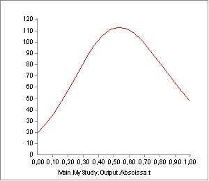
What the MuscleCalibrationAnalysis does is to run through the specified movement and compute the variation of the origin-insertion length of the muscle. It subsequently changes the user-defined value of Lt0 such that the length of the contractile element equals the optimum fiber length, Lf0, when the origin-insertion length is at its mean value. Notice that this does not necessarily correspond to the length when 50% of the movement has passed.
The rationale behind this method of tendon length calibration is that if you analyze a movement that is representative for what the body is created to do, then the muscles should probably attain their optimum fiber lengths somewhere safely within the interval of movement. Naturally this is not a very accurate way of doing it, and it will not work if you are modeling a movement that is outside the typical posture of the joints in the model.
Please notice that the tendon lengths specified in the AnyScript model are not altered by this method. Every time you reload the model you must run the MuscleCalibrationAnalysis again.
Detailed calibration¶
There is a more accurate and detailed way of calibrating tendons, but it requires additional information. More precisely it calibrates the tendon lengths at user-defined joint postures. So each muscle is associated with a certain set of joint postures for which the muscle is presumed to be at its neutral position. Please notice that the set of neutral joint postures is in principle different for each muscle in the system. In practice the calibration usually takes place on sets of muscles at a time, where all the muscles in a set are calibrated at the same joint postures. This way, all the muscles in a complicated system can be calibrated with a reasonable number of operations.
Detailed calibration of tendon lengths is covered in the “Inverse Dynamics of Muscle Systems” tutorial*. Calibration of ligaments is much the same type of process and is described in detail in the *Ligament tutorial, Lesson 7*.
But before we come to ligaments we must cover one last aspect of muscle modeling, namely General Muscles. They are the topic of the next lesson, Lesson 6.
See also
Next lesson: Lesson 6: General Muscles.
References¶
| [Hill_1938] | Hill, A. V. (1938). The heat of shortening and the dynamic constants of muscle. Proceedings of the Royal Society of London B: Biological Sciences, 126(843), 136-195. |
| [Huxley_1957] | Huxley, A. F. (1957). Muscle structures and theories of contraction. Progr Biophys Chem, 7, 255-318. |
| [Zajac_1989] | Zajac, F. E. (1989). Muscle and tendon Properties models scaling and application to biomechanics and motor. Critical reviews in biomedical engineering, 17(4), 359-411. |